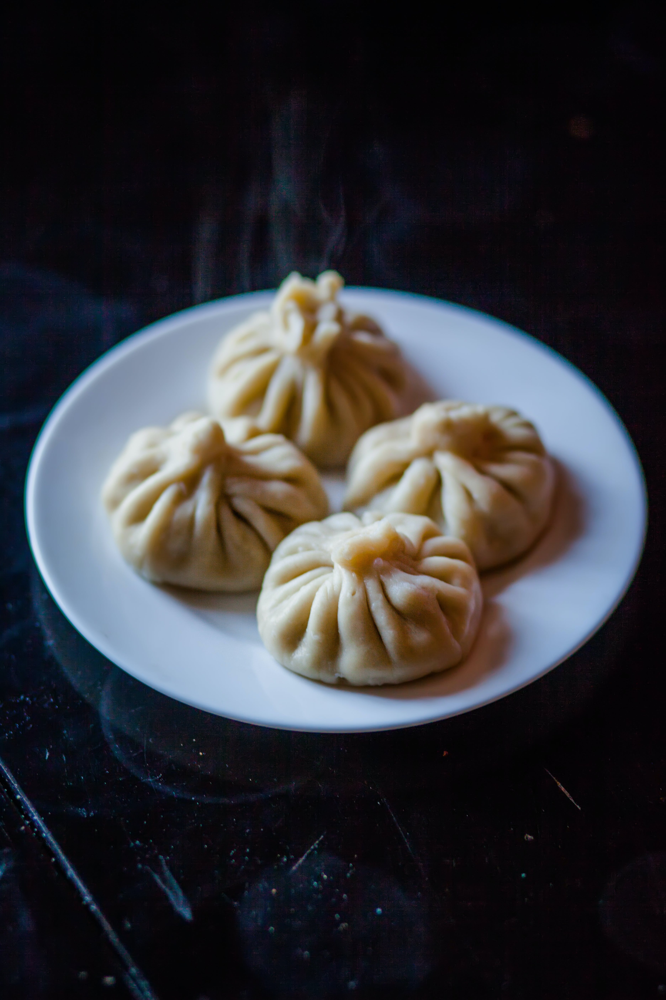

Dim Sum

Description
Dim sum is considered one of China's national dishes and an important part
of Chinese culinary culture. Consisting of small plates of steamed, fried,
and baked savory dumplings and appetizers, dim sum originated in Cantonese
teahouses where people would gather to socialize while enjoying tea and
small snacks. Over time, dim sum developed into a dining experience in its
own right, with restaurants offering carts piled high with small plates
that you can choose from. Popular dim sum dishes include siu mai (pork and
shrimp dumplings), char siu bao (steamed buns filled with sweet barbecued
pork), turnip cakes, and spring rolls.
Ingredients
- ground pork
- ground prawns
- soy sauce
- oyster sauce
- sesame oil
- sugar
- salt
- wonton skins
- chili peppers
- minced onion
Steps
-
Take a food processor and grind the prawns add the ground pork and the
rest of the ingredients, to mix everything well
-
Take the wonton skins and place between your thumb and the forefinger,
add the filing in the middle and carefully push up the rest of the skin
and push with a teaspoon the filling. Flat the base so the dim sum can
sit straight on the steamer.
-
Take a pan filled it with water and place your bamboo steamer on the top
and basket with a leaf of Chinese cabbage o baking paper with holes so
you can put on top your dim sums.
-
Put the dim sum in the bamboo steamer basket, cover and steam for about
12 min
- Served with soy sauce.